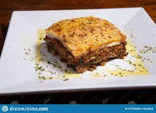

Musaka

Description
Moussaka is an eggplant- or potato-based dish, often including ground meat, which is common in the Balkans and the Middle East, with many local and regional variations. The best-known version in Europe and the Americas is the Greek variant.
Ingredients
- 5 tablespoons olive oil
- 1 pound ground beef
- 1 teaspoon ground paprika
- 1 teaspoon ground cumin
- 1 teaspoon salt
- 1 teaspoon ground black pepper
- 4 potatoes, peeled and cut into 1/2-inch cubes
- 1 (6.5 ounce) can tomato sauce
- 1 tablespoon chopped summer savory (chubritsa)
- 1 egg, lightly beaten
- ⅔ cup yogurt
Steps
- Preheat oven to 325 degrees F (165 degrees C)
- Heat oil in a skillet over medium heat. Cook ground beef until evenly brown. Season with paprika, cumin, salt, and pepper. Stir in potatoes, and cook for 2 to 3 minutes. Stir in tomato sauce, and summer savory. Add enough water to just barely cover. Reduce heat, and simmer 15 minutes.
- Pour meat mixture into 9x13 inch baking dish, and spread evenly. In a small bowl, mix together the egg and yogurt; pour, and spread evenly over meat mixture.
- Bake in preheated oven for 30 to 40 minutes, or until top is golden brown.